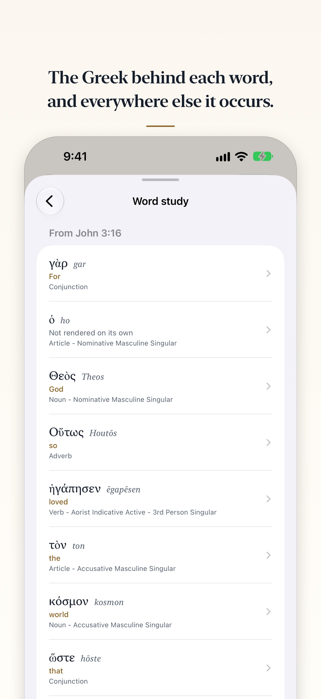

A Berean Standard Bible app for iPhone, iPad and Apple Watch
Lamp & Line carries one translation, the Berean Standard Bible, complete and stored on your device. It reads offline, it asks for no account, and it collects nothing.
Free. One optional purchase, never a subscription.
What the Berean Standard Bible is
The Berean Standard Bible, or BSB, is a modern English translation of the whole Bible. Its text was placed into the public domain on 30 April 2023 (berean.bible), so anyone may print it, quote it at any length, or build it into an app without asking permission or paying for a licence. That is what lets a small app carry all of it, offline and free.
Beside the text, its translators have published tables that show, word by word, the Hebrew or Greek behind each verse and the English they chose for it. Lamp & Line builds on those too.
Why read it offline
When Lamp & Line installs, the whole BSB comes with it: 66 books, 1,189 chapters and 31,086 verses, with the translation’s 4,569 section headings and 4,846 footnotes. (The count is 31,086 rather than the traditional 31,102 because, following the critical Greek text, the BSB does not print sixteen verses in its running text, Matthew 17:21 among them.)
So it opens on a plane, in a basement, or with every network switched off, and search works the same way. Type “John 3:16”, “Jn316”, “Psalm 23”, a phrase in quotation marks, or the words you half remember, and the whole Bible is searched on the device in a fraction of a second.
Offline is also private. There is no account, no advertising and no analytics. The App Store label reads “Data Not Collected”, and the app makes no network requests of its own.
What Lamp & Line does with the text
- Typeset, not dumped on screen. Poetry keeps the lines the translators set, and a line that runs past the edge hangs its continuation beneath, as a printed psalter does. Prose flows as paragraphs, and the section headings stand as headings.
- Footnotes, set apart. Notes are lettered through each chapter the way a printed Bible letters them. Tap one to read it in a sheet of its own, where it cannot be mistaken for Scripture.
- Copy that says where it came from. A copied passage leaves the verse numbers and note letters behind and ends with its reference and “BSB”.
- Word study. From version 1.6, Lamp & Line Full shows the Hebrew or Greek behind every word of a verse: how it is said, how the translators rendered it, and its grammar in plain words. Tap a word for its dictionary entry, from STEP Bible’s brief lexicons, then how the BSB renders it everywhere and every place it occurs. It is built from the translators’ own tables, so it is lexical data, not commentary.

Free, and what Full adds
On iPhone and iPad the complete BSB, search, bookmarks, whole-verse highlights, notes, and a daily Psalm, reading and prayer cost nothing, for good. Lamp & Line Full is one purchase, never a subscription. It adds word study, threads between related passages, every reading style, reading plans at your own pace, and the whole Bible on Apple Watch.
Read the BSB in Lamp & Line
For iPhone, iPad and Apple Watch. Nothing to sign up for and nothing to sign in to: install it and the whole Bible is there.